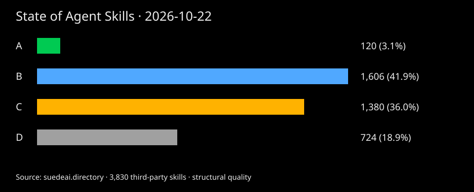

State of Agent Skills
120 of 3,827 third-party agent skills earn an A (3.1%). Every grade comes from the published files and the same 0–99 rubric.
Quality snapshot: . Install snapshot: 2026-11-08. This is the directory’s listed sample, not a census of all agent skills. Suede AI’s own skills are excluded from every figure and ranking in this report.
How the grades fall

| Grade | Skills | Share |
|---|---|---|
| A | 120 | 3.1% |
| B | 1,604 | 41.9% |
| C | 1,379 | 36.0% |
| D | 724 | 18.9% |
Download chart (SVG) · Download grade data (CSV) · Report data (JSON)

Where skills leave points on the table
| Score component | Skills below maximum | Total unearned points |
|---|---|---|
| Curated-list citations | 3,609 | 17,617 |
| Boundary clause | 3,315 | 13,260 |
| Structural checks | 1,291 | 10,328 |
| Example request | 2,871 | 8,613 |
| Compatibility declared | 3,300 | 6,600 |
| Tool permissions declared | 3,269 | 6,538 |
| Bundled scripts | 3,166 | 6,332 |
| Reference files | 2,012 | 6,036 |
| Instruction depth | 1,054 | 4,467 |
| Recent maintenance | 826 | 4,366 |
| Description length | 1,272 | 3,647 |
Unearned rubric points are opportunities to improve the published assessment. They are not evidence that a skill fails at its task. Check your own skill.
Popularity and quality answer different questions
The ten most installed skills and the ten highest-scoring skills share 0 entries. Equal quality scores are ordered by listing ID, so this overlap depends on the stated tie-break. Install counts come from skills.sh; missing counts are not zero.
Most installed
| Skill | Quality score | Recorded installs |
|---|---|---|
| find-skills | 81/100 · B | 4,257,002 |
| grill-me | 59/100 · D | 1,514,414 |
| hyperframes-cli | 77/100 · C | 1,464,826 |
| hyperframes | 80/100 · B | 1,426,313 |
| agent-browser | 75/100 · C | 1,351,437 |
| media-use | 80/100 · B | 1,336,331 |
| grill-with-docs | 61/100 · D | 1,297,131 |
| improve-codebase-architecture | 68/100 · D | 1,239,625 |
| hyperframes-registry | 78/100 · C | 1,218,467 |
| tdd | 79/100 · C | 1,212,130 |
Highest scores
| Skill | Quality score | Recorded installs |
|---|---|---|
| go-api-design | 95/100 · A | 213 |
| go-ci | 95/100 · A | 118 |
| go-cli | 95/100 · A | 112 |
| go-coding-standards | 95/100 · A | 226 |
| go-concurrency-review | 95/100 · A | 226 |
| go-context | 95/100 · A | 184 |
| go-data-structures | 95/100 · A | 113 |
| go-database | 95/100 · A | 192 |
| go-design-patterns | 95/100 · A | 170 |
| go-documentation | 95/100 · A | 112 |
Licenses and service requirements
| Cost and license lane | Skills |
|---|---|
| Free and open source | 3,412 |
| Free skill, needs a service | 309 |
| Non-commercial license | 80 |
| Restricted license | 26 |
Cost lanes use recorded license and installation evidence. Compact assessments may not include a full service-dependency review; always check the publisher’s terms.
The largest categories
| Category | Skills |
|---|---|
| ai agents llm | 599 |
| developer tools | 544 |
| devops cloud | 359 |
| marketing seo | 310 |
| product management | 237 |
| productivity knowledge | 233 |
| media creative | 231 |
| science research | 210 |
| frontend design | 198 |
| testing qa | 190 |
| data databases | 178 |
| business finance | 163 |
| security | 115 |
| writing content | 112 |
| code review quality | 93 |
| documents office | 55 |
Read the evidence
Published grading rubric · Open index and per-skill reports · Find skills inside your agent
Scores measure structure, documentation, bundled files, maintenance and curated-list citations. No third-party code was executed; no runtime or security results are inferred.
Star Suede AI Skills on GitHub
Free, graded agent skills for Claude Code, Codex and Cursor. Every star puts them in front of more builders.